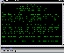
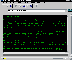
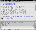
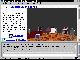
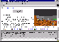

For those who don't yet have the luxury of a Java-capable system to try some of this stuff out on, or for those who just want a peek before proceeding, here are some screen snapshots of what the Cup-O MUD client looks like, and in particular what it looks like in combination with some of the other nifty features of the DU-BioWeb MOO web interface.
Except where noted, all of these shots were taken of Netscape 2.01 under Windows 95, with the Live3D VRML plug-in, while connected to Diversity University MOO (moo.du.org 8888).
(click on the thumbnail to see a full-resolution version of the image)
 Cup-O MUD running under Sun's AppletViewer (from the beta JDK), demonstrating Cup-O MUD's basic appearance, and flexibility in display colors.
 Same as above viewed under Netscape.
 A demonstration of integration of the Cup-O MUD client with the MOO web interface using Netscape frames.
 A shot of the DU Student Union as viewed through the web interface with a Cup-O MUD frame and the integration of a VRML view window.
 A shot of DU's VRML/Java/Shockwave Arcade, taken from a 1024x768 screen.
Last updated Apr 13, 1996 by Alex Stewart <riche@crl.com>
{kind=link}
{kind=link}
{kind=link}
{kind=link}
{kind=link}